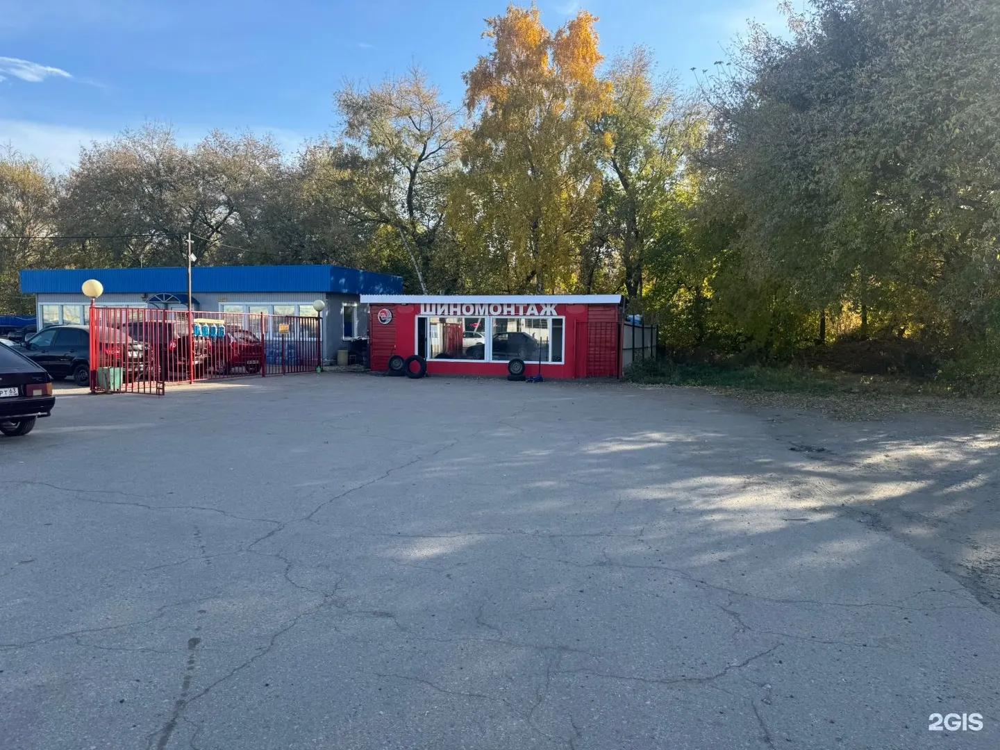
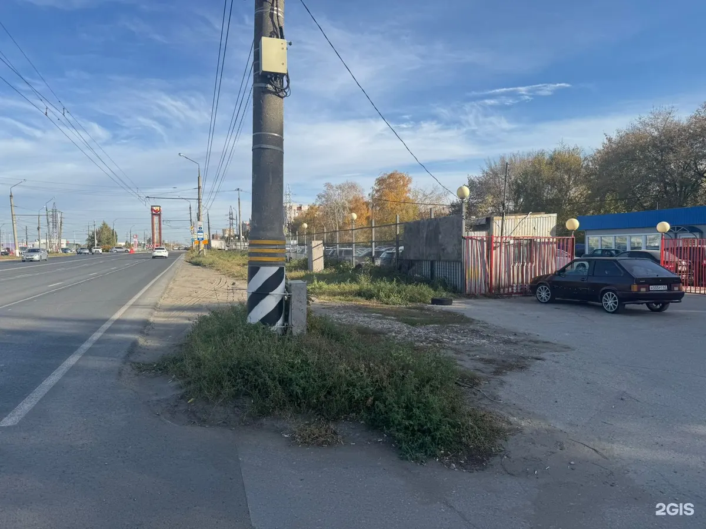
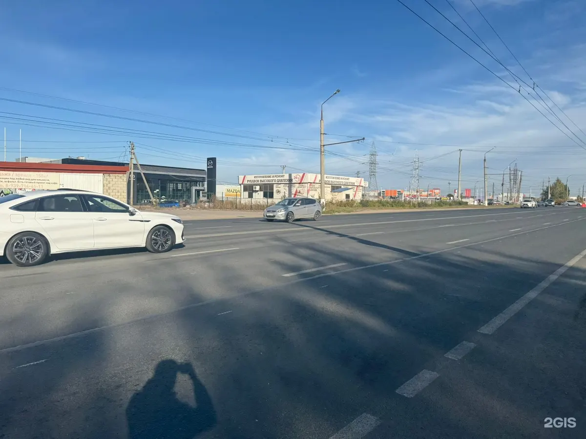
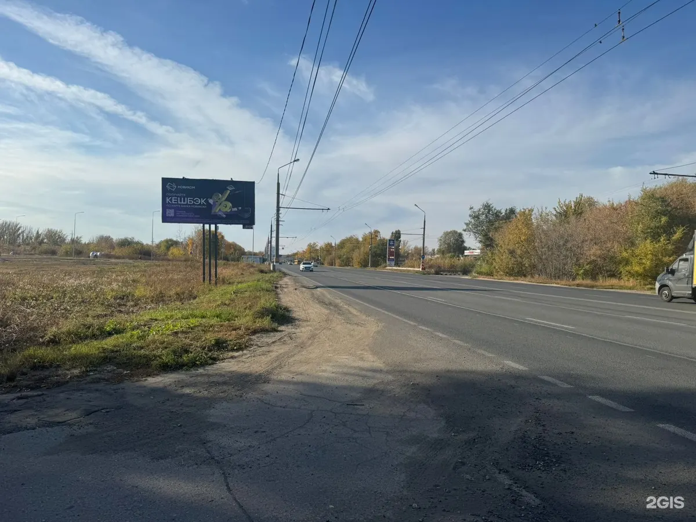

Шиномонтаж и диски в Тольятти
Шиномонтаж и правка дисков в Тольятти – запишем день в день
Переобуем, выправим и заварим диски, отремонтируем порез. Напишите в Telegram – подберём время, часто на сегодня.
- Каждый день с 08:00 до 21:00
- 4,8 в 2ГИС по 27 оценкам
- Картой, по QR-коду или наличными

Что делаем
Цену под ваш радиус и диск подскажем в сообщении.
Шины и диски
- Шиномонтаж и переобувкауточнить
- Правка и прокатка дисковуточнить
- Сварка дисковуточнить
- Покраска дисковуточнить
- Ремонт порезовуточнить
Ещё
- Ошиповка шинуточнить
- Мотошиномонтажуточнить
- Продажа шин б/ууточнить
- Выкуп шин б/ууточнить
Как записаться
- 01
Напишите в Telegram
Машина, радиус и что случилось – этого хватит.
- 02
Подберём время
Если окно есть, примем в тот же день.
- 03
Приезжайте
Мастер покажет, что с колесом, и подскажет, как не повторить.
- 04
Оплата на месте
Картой, по QR-коду, переводом или наличными.



За что нас хвалят в отзывах
Диски без вибрации после правки
«Вибрация пропала» – Лидия Витальевна, январь 2026.
Объясняем, а не просто меняем
«Не просто поменять, а реально помочь советом» – Сергей Васильевич.
Находим место в тот же день
«Нашли место день в день» – Maria Pchelyakova, март 2026.
Чай, пока ждёте
«Даже чаем напоили» – Kirill Kulikov.
Отзывы из 2ГИС
«Восторг,нужно было выровнять диск . Сделали быстро, качественно. Вибрация пропала,остались только положительные эмоции ))»
Лидия Витальевна · 27 января 2026
«Очень крутые ребята. Поправили убитые диски по адекватной стоимости и качественно. + переобули автомобиль и сделали скидку. Даже чаем напоили) Хозяин - молодец, чувствуется, что с душой к делу относится. Рекомендую!»
Kirill Kulikov · 21 ноября 2025
«Мастер всё объяснил, подсказал, как правильно сделать, чтобы потом не возникло проблем. Редко встретишь такой подход ,не просто поменять, а реально помочь советом.»
Сергей Васильевич · 26 января 2026
Отзывы с карточки в 2ГИС, без правок.
Частые вопросы
Можно приехать сегодня?
Напишите в Telegram – если есть окно, примем в тот же день.
Выправите погнутый диск?
Да: правка, прокатка, сварка и покраска дисков.
Беретесь за мотоциклы?
Да, делаем мотошиномонтаж.
Покупаете старые шины?
Да, выкупаем и продаём шины б/у.
Напишите – подберём время, часто на сегодня
- Адрес
- Тольятти – точка на карте в 2ГИС
- Часы
- Ежедневно 08:00–21:00
- Телефон
- +7 917 105-15-45